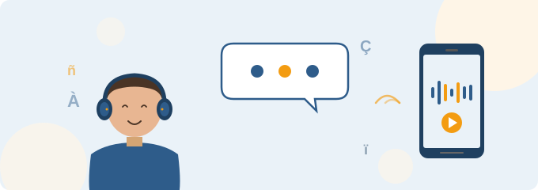

Aquest mòdul aborda un dels reptes més freqüents en l'ensenyament de llengües a persones adultes: el desenvolupament de les habilitats orals. Si hi ha una destresa que l'alumnat adult sol sentir com una barrera emocional i cognitiva, és la de parlar i comprendre la llengua oral en situacions reals. Açò es fa especialment evident en la formació de persones adultes ja que, el fet d'exposar-se públicament pot generar bloquejos, ansietat i, en ocasions, l'abandonament del curs.
Les tecnologies digitals que treballarem en este mòdul no resolen estos problemes per si soles, però sí que obrin possibilitats pedagògiques molt interessants ja que permeten que l'alumnat practique fora de l'aula, al seu ritme, sense el judici dels companys i amb un accés il·limitat a models de llengua natural. En mans de professorat, són eines que amplifiquen el treball presencial i converteixen el temps fora de l'aula en un espai real d'aprenentatge.

L'oralitat: la gran oblidada en la formació bàsica d'adults
En moltes aules de FPA, el treball sobre les habilitats orals queda relegat a un segon pla per raons ben conegudes: la pressió dels continguts curriculars, l'escassa disponibilitat de temps per a pràctiques individualitzades i, molt especialment, la mateixa resistència de l'alumnat adult a exposar-se oralment davant dels companys. El resultat és un alumnat que, inclús després de mesos de classe, manté dificultats serioses per a entendre una conversa telefònica real, per a expressar-se amb fluïdesa en una entrevista laboral o per a seguir les instruccions orals en un tràmit administratiu.
Esta realitat afecta de manera desigual el perfil majoritari a FPA. Els qui no van completar l'ESO al seu moment solen presentar inseguretats lectores i escrites que es traslladen a l'oralitat formal: llegir en veu alta amb entonació, fer una exposició, participar en un debat o deixar un missatge de veu coherent són tasques que requereixen unes competències que el sistema educatiu, al seu moment, no va arribar a consolidar. Per a l'alumnat de valencià o castellà per a estrangers, el problema s'afig al desafiament d'aprendre una llengua nova en edat adulta, amb les rigideses fonoarticulatòries pròpies i amb un entorn que rarament oferix pràctica oral estructurada.
El que la tecnologia sí que pot aportar
Les eines digitals que treballarem permeten abordar algunes d'estes dificultats des d'angles concrets:
- Reducció de l'ansietat comunicativa: la interacció amb un assistent d'IA o amb una gravadora no activa els mateixos mecanismes de vergonya i exposició social que la interacció humana. L'alumnat pot equivocar-se, repetir i assajar sense ser jutjat.
- Accés il·limitat a models de llengua: les tecnologies TTS generen àudios naturals de qualitat quasi humana, amb veus de distints gèneres, edats i varietats geogràfiques, la qual cosa enriqueix enormement l'input auditiu.
- Personalització del ritme i la dificultat: la IA generativa permet crear materials orals específics per al nivell, els interessos i les necessitats comunicatives del grup o de l'individu.
- Retroalimentació immediata: eines com l'Entrenador de Lectura de Microsoft o els correctors de pronunciació oferixen informació detallada sobre la lectura en veu alta i l'articulació, cosa que el docent, per temps, difícilment pot oferir de manera individualitzada.
- Continuïtat: l'alumnat pot continuar practicant fora del centre, la qual cosa multiplica les hores reals d'exposició a la llengua.
El que la tecnologia no pot fer
És imprescindible que el professorat mantinga una mirada crítica sobre estes eines. Hi ha límits clars:
- La IA no coneix l'alumnat. No sap si una persona té un problema auditiu, si ha patit una experiència traumàtica en la seua escolarització prèvia o si procedix d'una llengua sense tradició escrita.
- La IA pot generar àudios amb errors o entonacions poc naturals, especialment en varietats no estàndard. El docent ha de validar sempre el material abans d'utilitzar-lo.
- La pràctica amb una màquina no substituïx la interacció humana real. És un pas intermedi, una ajuda, però l'objectiu últim sempre és la comunicació amb persones.
- No tota l'oralitat es pot mesurar amb algoritmes. La pragmàtica, l'humor, la ironia, els silencis significatius, l'adequació cultural, s'escapen dels sistemes automàtics d'avaluació.teri professional.